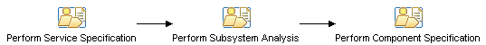

| Путеводитель: Transitioning from IBM SOMA |
 |
|
Service-Oriented Modeling and Architecture at IBMThe SOMA method was developed as an engagement model within IBM's Global Business Services group, and while public papers and descriptions were available it was primarily a method used by consultants in the field and not available to IBM customers. On the other hand the RUP is a commercial product offering from IBM which customers use to develop their own software development processes. This integrated method offering, RUP/SOMA has been developed to bring the unique aspects of SOMA to the RUP commercial method and make these available to commercial customers. In the area of SOA Solution design it is not unsurprising to find that many similar elements appeared in these two methods, primarily the following three topic areas. In support of these activities SOMA defined a set of techniques and work products, as shown in the figure below, to define end-to-end solution models. The method elements below are color coded with Identification then Specification and finally Realization elements from top to bottom. The RUP included SOA content in 2004 and 2005 that provided customers with many similar techniques and a set of work products integrated into the existing RUP framework.
The Integrated SOA MethodIn bringing together the RUP SOA content and SOMA we have brought together the methods, techniques and work products according to the framework below. As you can see the core activities remain the same, the work products remain the same (at this high-level of detail) and we describe here the primary influences that guide the different activities (although most activities take into account some aspect of most of these influences). Note also that this remains an iterative method, that the identification, specification and realization activities often happen in multiple, and often overlapping, iterations focused on different services or services in different domains.
The current method does not cover the deployment, provisioning and management of services at this time. Phase: IdentificationAs we have said, the core approach to service identification is common to both SOMA and RUP, however some differences existed and some of these differences are surfaced in the resulting integrated method. The following table describes how the techniques from SOMA are realized in the integrated RUP/SOMA and where in the resulting method content the topics can be found. Where possible names have been preserved from SOMA except where existing RUP material had a stronger precedence.
This results in a Phase structure for Identification which looks like this:
Also the RUP method content includes the following elements that had no corresponding technique in SOMA.
Phase: SpecificationService Specification has been developed in a similar fashion to Identification, and described in the table below.
This results in a Phase structure for Specification which looks like this:  Also the RUP method content includes the following elements that had no corresponding technique in SOMA.
Phase: RealizationService Realization has been developed in a similar fashion to the two activities above, and described in the table below.
This results in a Phase structure for realization which looks like this: |


© Copyright IBM Corp. 1987, 2006. Все права защищены.. |